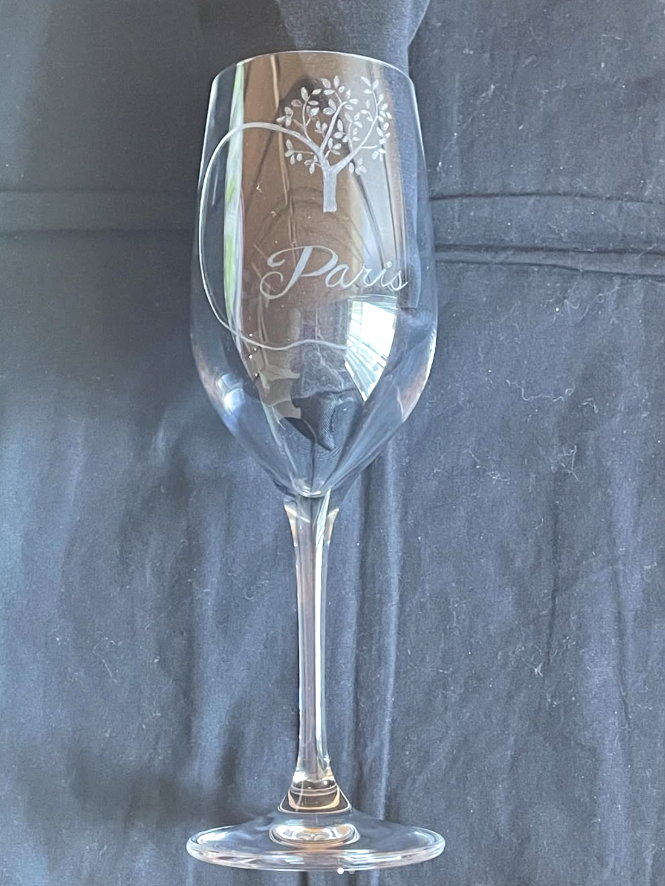
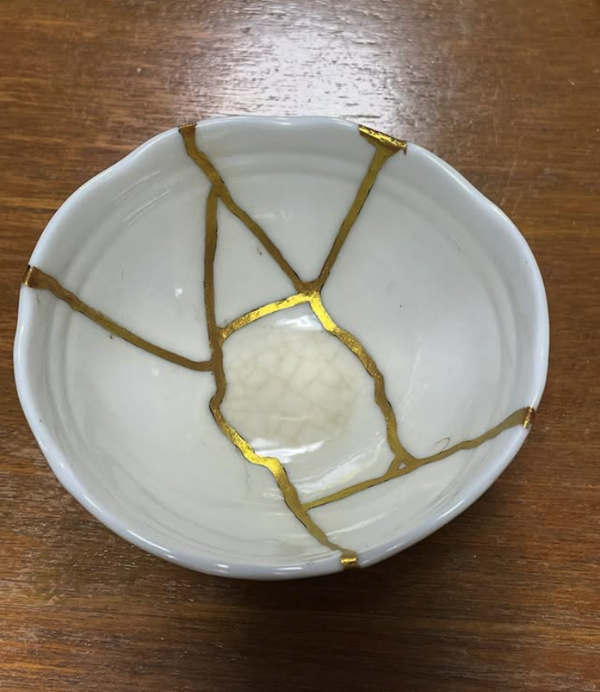
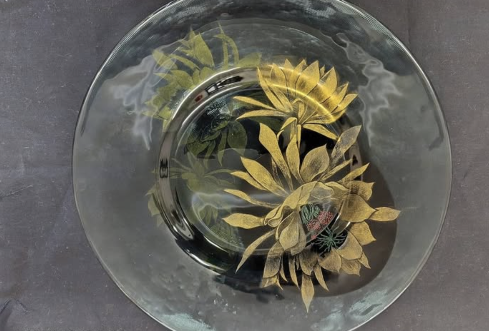

Glasritzen·Kintsugi
グラスリッツェン教室 ・ 金継ぎ教室
透明なガラスに、ダイヤモンドの先で模様を描く。割れたうつわを、漆と金でよみがえらせる。ひとつひとつ、手のなかで。
講師Kojima Yumi ／ 小島 由美
ダイヤモンドの先で、
ガラスに絵を描く。
グラスリッツェンは、ダイヤモンドの刃先で透明なガラスの表面を細かく削り、模様を彫り出すドイツ生まれの技法です。彫った線が光を受け、銀白色にやわらかくきらめきます。
お名前や記念日を入れた、世界にひとつのグラス。贈りものにも、暮らしの一点にも。教室では、はじめての方も道具の持ち方から、ていねいにお伝えしています。

Engraved Glass割れたうつわを、
金でよみがえらせる。
金継ぎは、欠けや割れを漆で丁寧に継ぎ、仕上げに金をほどこす日本の伝統技法です。傷を隠すのではなく、その景色ごと受けとめて、新しい美しさに変えていきます。
思い出のうつわ、手放せない一枚。もう一度使えるように、そして前より愛おしくなるように。教室・お直しのご相談を承っています。

Kintsugi加えることも、繕うことも。
手のぬくもりで。
グラスリッツェンは、なにもないガラスに光の模様を「加える」技。金継ぎは、こわれたうつわを「繕い直す」技。生み出す向きは逆でも、根っこは同じ——時間をかけ、手のなかで、ものをいっそう愛おしくしていくこと。
彫りと金継ぎ、ふたつを組み合わせたひとつの作品づくりや、ご相談も承っています。

Glasritzen × Kintsugi出展・イベントのご案内
開催予定のイベントです。各ページから詳しいご案内をご覧いただけます。
教室・お直しのご相談、
お気軽にどうぞ。
お電話、またはメールにてお問い合わせいただけます。